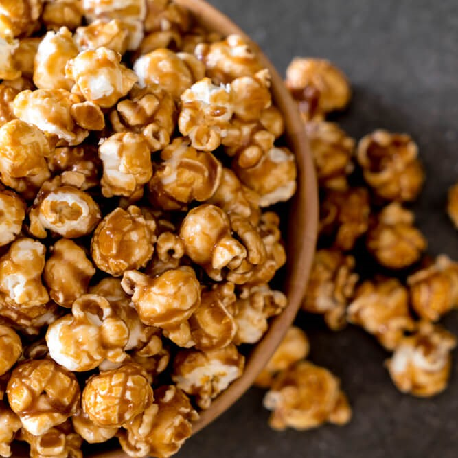

Não se sabe quem foi o responsável pela origem da pipoca, mas tudo indica que os povos americanos teriam sido os pioneiros em integrá-la na alimentação. Tão popular quanto o próprio cinema, a pipoca é um alimento apreciado por várias pessoas ao redor do mundo.
